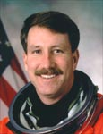

Lyndon B. Johnson Space Center
Houston, Texas 77058
|
National Aeronautics and Space Administration Lyndon B. Johnson Space Center Houston, Texas 77058 |
 |
Biographical Data |
||
Kent V. Rominger (Captain, USN, REt.)
NASA ASTRONAUT (FORMER)
PERSONAL DATA: Born August 7, 1956, in Del Norte, Colorado. Married to the former Mary Sue Rule. They have one child. He enjoys snow skiing, water skiing, horseback riding, and running. His parents, Mr. & Mrs. R. Vernon Rominger, reside in Del Norte, Colorado. Her parents, Mr. & Mrs. Delbert Rule, of Durango, Colorado, are deceased.
EDUCATION: Graduated from Del Norte High School, Del Norte, Colorado, in 1974; received a bachelor of science degree in civil engineering from Colorado State University in 1978; a master of science degree in aeronautical engineering from the U.S. Naval Postgraduate School in 1987.
ORGANIZATIONS: Association of Space Explorers, Society of Experimental Test Pilots, American Institute of Aeronautics and Astronautics, Association of Naval Aviation, and Chi Epsilon Civil Engineering Society.
SPECIAL HONORS: Defense Superior Service Medal. Distinguished Flying Cross. Defense Meritorious Service Medal. NASA Distinguished Service Medal. Colorado Aviation Hall of Fame Inductee (2000). Distinguished Graduate, U.S. Naval Test Pilot School. Naval Air Test Center Test Pilot of the Year (1988). Society of Experimental Test Pilots Ray E. Tenhoff Award (1990) and Jack Northrop Award (1996). Colorado State University Distinguished Service Award (1997). West Coast Tomcat Fighter Pilot of the Year (1992). Top Ten Carrier Landing Distinction in Airwings Two and Nine.
EXPERIENCE: Rominger received his commission through the Aviation Reserve Officer Candidate (AVROC) Program in 1979, and was designated a Naval Aviator in September 1980. Following training in the F-14 Tomcat, he was assigned to Fighter Squadron Two (VF-2) from October 1981 to January 1985 aboard the USS Ranger and USS Kitty Hawk. While assigned to VF-2 Rominger attended the Navy Fighter Weapons School (Topgun). In 1987 he completed the Naval Postgraduate School/Test Pilot School Cooperative Program, and was assigned as F-14 Project Officer to the Carrier Suitability Branch of the Strike Aircraft Test Directorate at Patuxent River, Maryland. During his tour of duty Rominger completed the initial carrier suitability sea trials of the F-14B, logging the first aircraft carrier arrestment and catapult launch in the upgraded Tomcat. In September 1990 he reported to Fighter Squadron Two Hundred Eleven (VF-211) where he served as Operations Officer and completed a Desert Storm Deployment to the Arabian Gulf aboard USS Nimitz.
He has logged over 7,000 flying hours in over 35 types of aircraft and 685 carrier landings.
NASA EXPERIENCE: Selected by NASA in March 1992, Rominger reported to the Johnson Space Center in August 1992. He completed one year of training and is qualified for assignment as a pilot on future Space Shuttle flight crews. Rominger was initially assigned to work technical issues for the Astronaut Office Operations Development Branch. He also served as Chief of the Astronaut Office Shuttle Operations Branch, Deputy Director, Flight Crew Operations, and Chief of the Astronaut Corps. .A veteran of five space flights, Rominger logged over 1,600 hours in space. He flew as pilot on STS-73 (1995), STS-80 (1996) and STS-85 (1997), and was the crew commander on STS-96 (1999) and STS-100 (2001). In April 2005 he retired from the Navy. Rominger retired from NASA in September 2006 to accept a position with ATK Launch Systems, Utah.
SPACE FLIGHT EXPERIENCE: STS-73 Columbia (October 20 to November 5, 1995) was the second United States Microgravity Laboratory mission. The mission focused on materials science, biotechnology, combustion science, the physics of fluids, and numerous scientific experiments housed in the pressurized Spacelab module. In completing his first space flight, Rominger orbited the earth 256 times, traveled over 6 million miles, and logged a total of 15 days, 21 hours, and 52 minutes in space.
STS-80 Columbia (November 19 to December 7, 1996) was a 17-day mission during which the crew deployed and retrieved the Wake Shield Facility (WSF) and the Orbiting Retrievable Far and Extreme Ultraviolet Spectrometer (ORFEUS) satellites. The free-flying WSF created a super vacuum in its wake and grew thin film wafers for use in semiconductors and other high-tech electrical components. The ORFEUS instruments, mounted on the reusable Shuttle Pallet Satellite, studied the origin and makeup of stars. In completing his second space flight, Rominger orbited the earth a record 278 times, traveled over 7 million miles and logged 17 days, 15 hours and 53 minutes in space.
STS-85 Discovery (August 7-19, 1997) was a 12-day mission during which the crew deployed and retrieved the CRISTA-SPAS satellite, operated the Japanese Manipulator Flight Demonstration (MFD) robotic arm, studied changes in the Earths atmosphere and tested technology destined for use on the future International Space Station. The mission was accomplished in 189 Earth orbits, traveling 4.7 million miles in 11 days, 20 hours and 27 minutes.
STS-96 Discovery (May 27 to June 6, 1999) was a 10-day mission during which the crew delivered 4 tons of logistics and supplies to the International Space Station in preparation for the arrival of the first crew to live on the station. The mission included the first docking of a Space Shuttle to the International Space Station and was accomplished in 153 Earth orbits, traveling 4 million miles in 9 days, 19 hours and 13 minutes.
STS-100 Endeavour (April 19 to May 1, 2001) was a 12-day mission during which the crew installed the Canadian-built Robotic Arm and the Rafaello Logistics Module to the International Space Station. Endeavour was docked 8-days on the most complex robotics flight in the history of the Space Shuttle program and was made up of a very diverse international crew, representing the United States, Russia, Canada and Italy. The mission was completed in 187 Earth orbits, traveling 4.9 million miles in 11 days, 21 hours and 30 minutes.
OCTOBER 2006
{kind=link}